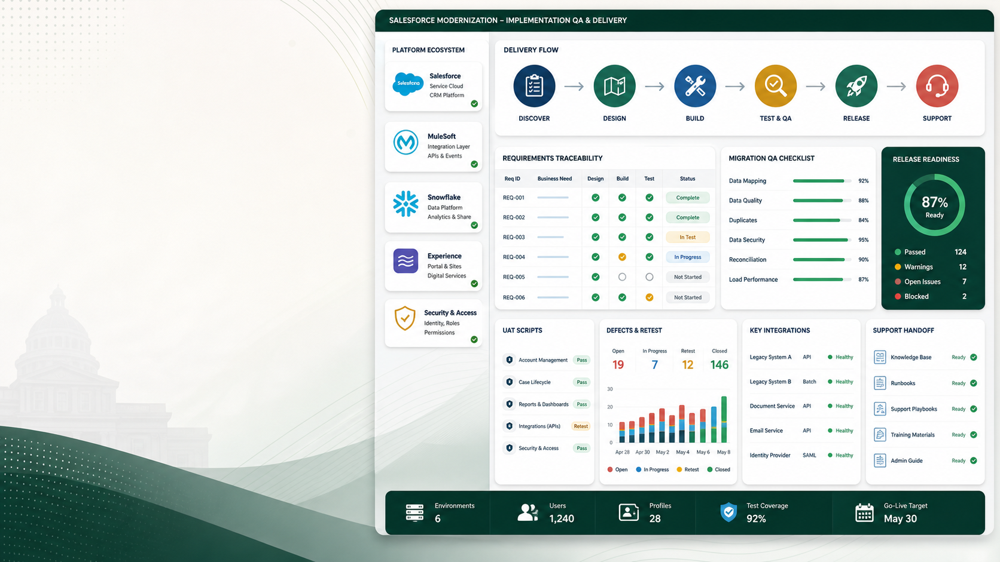

Narrow support
The main RFP is for Salesforce professional services; the useful lane here is implementation QA, migration sampling, and UAT evidence beside a qualified Salesforce team.
Salesforce services support
I can support the implementation team with fixed-scope QA/UAT, release-readiness, and data-migration evidence without claiming to be a Salesforce prime.

The main RFP is for Salesforce professional services; the useful lane here is implementation QA, migration sampling, and UAT evidence beside a qualified Salesforce team.
I can support the implementation team with fixed-scope QA/UAT, release-readiness, and data-migration evidence without claiming to be a Salesforce prime.
No client, participant, or production CRM records should be sent by email; use dummy records or a secure BakerRipley-approved workspace.
Could you confirm whether a vendor without documented attendance at the May 5 mandatory conference may still be considered for a narrow support-sidecar role?
Prepared by Nakul as an independent freelancer/sole proprietor. This is not a full prime-vendor proposal unless the buyer confirms that path; it is a bounded support slice.